\(\Delta\) is the (generic) population effect size
\(s_j^2\) is the variance of the group \(j\) within a study
Simulation setup
Given the introduction to effect sizes, from now we will simulate data using UMD and the individual-level data.
Basically we are simulating an effect size \(D\) coming from the comparison of two independent groups \(G_1\) and \(G_2\).
Each group is composed by \(n\) participants measured on a numerical outcome (e.g., reaction times)
Simulation setup
A more general, clear and realistic approach to simulate data is by generating \(k\) studies with same/different sample sizes and (later) true effect sizes.
k <-10# number of studiesn1 <- n2 <-10+rpois(k, 30-10) # sample size from poisson distribution with lambda 40 and minimum 10D <-0.5# effect sizeyi <-rep(NA, k)vi <-rep(NA, k)for(i in1:k){ g1 <-rnorm(n1[i], 0, 1) g2 <-rnorm(n2[i], D, 1) yi[i] <-mean(g2) -mean(g1) vi[i] <-var(g1)/n1[i] +var(g2)/n2[i]}sim <-data.frame(id =1:k, yi, vi)head(sim)#> id yi vi#> 1 1 0.6103097 0.08922306#> 2 2 0.4375167 0.04732073#> 3 3 1.0059947 0.04430640#> 4 4 0.6666242 0.07048580#> 5 5 0.7943778 0.05421538#> 6 6 0.6924912 0.08382427
Simulation setup
We can again put everything within a function:
sim_studies <-function(k, es, n1, n2 =NULL){if(length(n1) ==1) n1 <-rep(n1, k)if(is.null(n2)) n2 <- n1if(length(es) ==1) es <-rep(es, k) yi <-rep(NA, k) vi <-rep(NA, k)for(i in1:k){ g1 <-rnorm(n1[i], 0, 1) g2 <-rnorm(n2[i], es[i], 1) yi[i] <-mean(g2) -mean(g1) vi[i] <-var(g1)/n1[i] +var(g2)/n2[i] } sim <-data.frame(id =1:k, yi, vi, n1 = n1, n2 = n2)# convert to escalc for using metafor methods sim <- metafor::escalc(yi = yi, vi = vi, data = sim)return(sim)}
Simulation setup - Disclaimer
The proposed simulation approach using a for loop and separated vectors. For the purpose of the workshop this is the best option. In real-world meta-analysis simulations you can choose a more functional approach starting from a simulation grid as data.frame and mapping the simulation functions.
For a more extended overview of the simulation setup we have an entire paper. Supplementary materials (github.com/shared-research/simulating-meta-analysis) contains also more examples for complex (multilevel and multivariate models.)
Combining studies
Combining studies
Let’s imagine to have \(k = 10\) studies, a \(D = 0.5\) and heterogeneous sample sizes in each study.
We can take the average effect size and considering it as a huge study. This can be considered the best way to combine the effects.
\[
\hat{D} = \frac{\sum^{k}_{i = 1} D_i}{k}
\]
mean(dat$yi)#> [1] 0.3939045
It is appropriate? What do you think? Are we missing something?
Weighting studies
We are not considering that some studies, despite providing a similar effect size could give more information. An higher sample size (or lower sampling variance) produce a more reliable estimation.
Would you trust more a study with \(n = 100\) and \(D = 0.5\) or a study with \(n = 10\) and \(D = 0.5\)? The “meta-analysis” that we did before is completely ignoring this information.
Weighting studies
We need to find a value (called weight \(w_i\)) that allows assigning more trust to a study because it provide more information.
The simplest weights are just the sample size, but in practice we use the so-called inverse-variance weighting. We use the (inverse) of the sampling variance of the effect size to weight each study.
The basic version of a meta-analysis is just a weighted average:
wi <-1/dat$visum(dat$yi * wi) /sum(wi)#> [1] 0.3810579# weighted.mean(dat$yi, wi)
Weighting studies
Graphically, the two models can be represented in this way:
Code
dw <-weighted.mean(dat$yi, 1/dat$vi)dunw <-mean(dat$yi)unw_plot <-ggplot(dat, aes(x = yi, y =factor(id))) +geom_point(size =3) +xlim(c(-0.5, 1.5)) +geom_vline(xintercept = dunw) +xlab(latex2exp::TeX("$y_i$")) +ylab("Study") +theme_minimal(15) +annotate("label", x =0.5, y = k +0.4, label = latex2exp::TeX(sprintf("$\\bar{D} = %.2f$", dunw))) +geom_label(aes(x =1, y = id, label =paste0("n = ", n1)))w_plot <-ggplot(dat, aes(x = yi, y =factor(id))) +geom_point(aes(size =1/vi),show.legend =FALSE) +xlim(c(-0.5, 1.5)) +geom_vline(xintercept = dw) +xlab(latex2exp::TeX("$y_i$")) +ylab("Study") +theme_minimal(15) +annotate("label", x =0.5, y = k +0.4, label = latex2exp::TeX(sprintf("$\\bar{D}_w = %.2f$", dw))) +geom_label(aes(x =1, y = id, label =paste0("n = ", n1)))unw_plot + w_plot
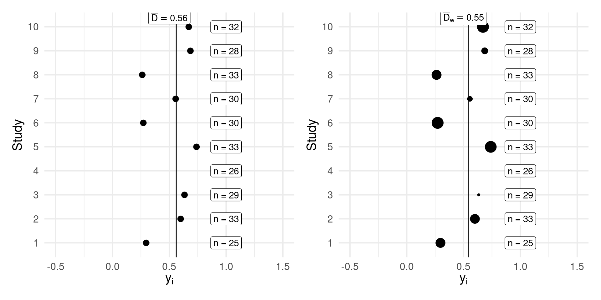
Equal-effects (EE) meta-analysis
EE meta-analysis
What we did in the last example (the weighted mean) is the exactly a meta-analysis model called equal-effects (or less precisely fixed-effect). The assumptions are very simple:
there is a unique, true effect size to estimate \(\theta\)
each study is a more or less precise estimate of \(\theta\)
there is no TRUE variability among studies. The observed variability is due to studies that are imprecise (i.e., sampling error)
assuming that each study has a very large sample size, the observed variability is close to zero.
Where \(\sigma^2_i\) is the vector of sampling variabilities of \(k\) studies. This is a standard linear model but with heterogeneous sampling variances.
EE meta-analysis
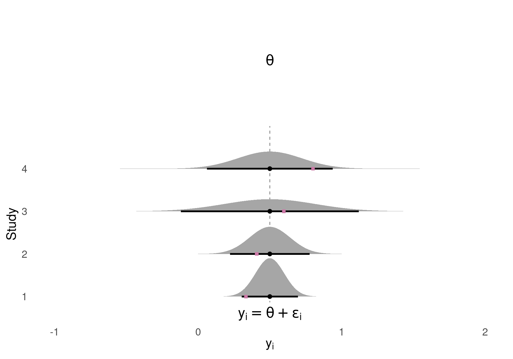
Simulating an EE model
What we were doing with the sim_studies() function so far was simulating an EE model. In fact, there were a single \(\theta\) parameter and the observed variability was a function of the rnorm() randomness.
Based on previous assumptions and thinking a little bit, what could be the result of simulating studies with a very large \(n\)?
Formulating the model as a intercept-only regression (see Equations Equation 1 and Equation 2) we can generate data directly:
D <-0.5n <-30k <-10yi <- D +rnorm(k, 0, sqrt(1/n +1/n))# or equivalently# yi <- rnorm(k, D, sqrt(1/n + 1/n))
As we did for the aggregated data approach. Clearly we need to simulate also the vi vector from the appropriate distribution. Given that we simulated data starting from the participant-level the uncertainty of yi and vi is already included.
Fitting an EE model
The model can be fitted using the metafor::rma() function, with method = "EE"1.
The first section (logLik, deviance, etc.) presents some general model statistics and information criteria
The \(I^2\) and \(H^2\) are statistics evaluating the observed heterogeneity (see next slides)
The Test of Heterogeneity section presents the test of the \(Q\) statistics for the observed heterogeneity (see next slides)
The Model Results section presents the estimation of the \(\theta\) parameter along with the standard error and the Wald \(z\) test (\(H_0: \theta = 0\))
The metafor package has a several well documented functions to calculate and plot model results, residuals analysis etc.
Interpreting an EE model
plot(fit) # general plots
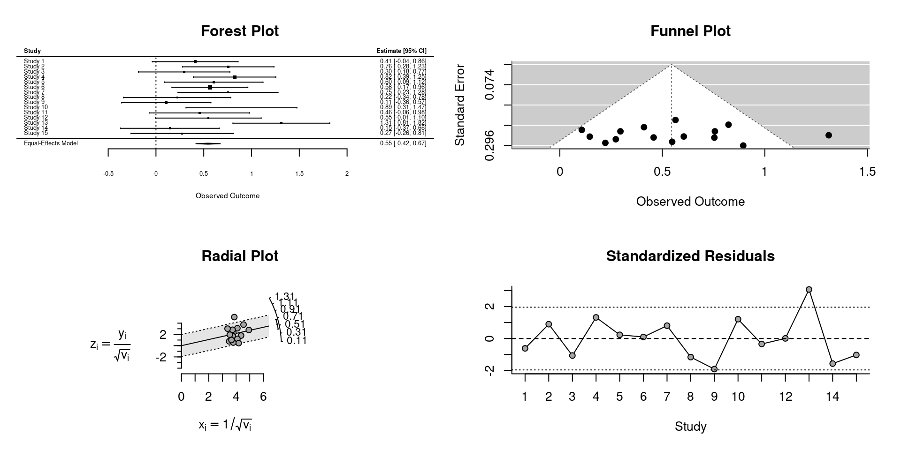
Interpreting an EE Model
The main function for plotting model results is the forest() function that produce the forest plot.
forest(fit)
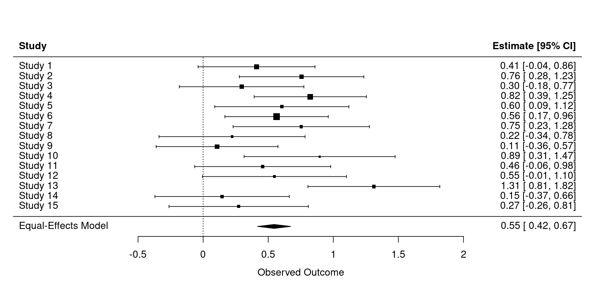
Interpreting an EE Model
We did not introduced the concept of heterogeneity, but the \(I^2\), \(H^2\) and \(Q\) statistics basically evaluate if the observed heterogeneity should be attributed to sampling variability (uncertainty in estimating \(\theta\) because we have a limited \(k\) and \(n\)) or sampling variability plus other sources of heterogeneity.
wi <-1/dat$vitheta_hat <-with(dat, sum(yi * wi)/sum(wi))se_theta_hat <-sqrt(1/sum(wi))c(theta = theta_hat, se = se_theta_hat, z = theta_hat / se_theta_hat)#> theta se z #> 0.37500999 0.06804653 5.51108181
Random-effects (RE) meta-analysis
Are the EE assumptions realistic?
The EE model is appropriate if our studies are somehow exact replications of the exact same effect. We are assuming that there is no real variability.
However, meta-analysis rarely report the results of \(k\) exact replicates. It is more common to include studies answering the same research question but with different methods, participants, etc.
people with different ages or other participant-level differences
different methodology
…
Are the EE assumptions realistic?
If we relax the previous assumption we are able to combine studies that are not exact replications.
Thus the real effect \(\theta\) is no longer a single true value but can be larger or smaller in some conditions.
In other terms we are assuming that there could be some variability (i.e., heterogeneity) among studies that is independent from the sample size. Even with studies with \(\lim_{n\to\infty}\) the observed variability is not zero.
Random-effects model (RE)
We can extend the EE model including another source of variability, \(\tau^2\). \(\tau^2\) is the true heterogeneity among studies caused by methdological differences or intrisic variability in the phenomenon.
Formally we can extend Equation 1 as: \[
y_i = \mu_{\theta} + \delta_i + \epsilon_i
\qquad(3)\]
Where \(\mu_{\theta}\) is the average effect size and \(\delta_i\) is the study-specific deviation from the average effect (regulated by \(\tau^2\)). Clearly each study specific effect is \(\theta_i = \mu_{\theta} + \delta_i\).
RE model
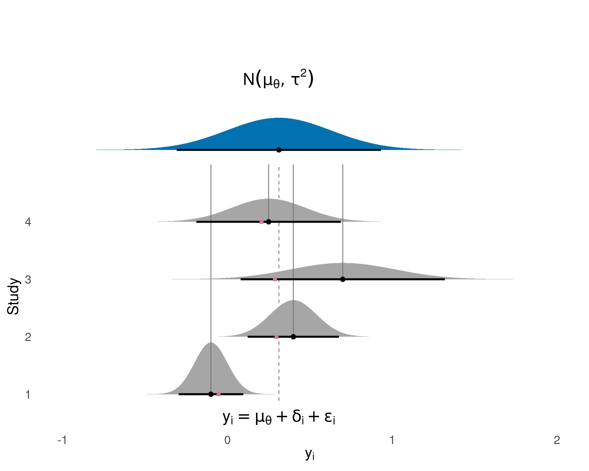
RE model estimation
Given that we extended the EE model equation. Also the estimation of the average effect need to be extended. Basically the RE is still a weighted average but weights need to include also \(\tau^2\).
The weights are different compared to the EE model. Extremely precise/imprecise studies will have less impact in the RE model.
RE vs EE model
The crucial difference with the EE model is that even with large \(n\), only the \(\mu_{\theta} + \delta_i\) are estimated (almost) without error. As long \(\tau^2 \neq 0\) there will be variability in the effect sizes.
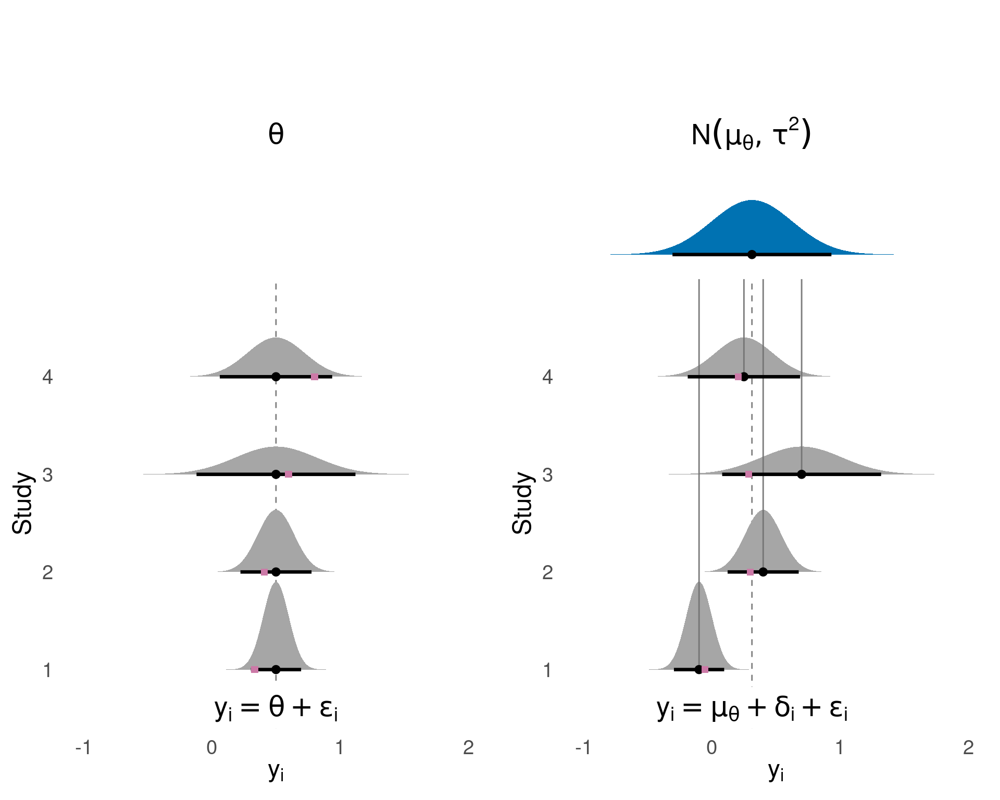
Simulating a RE Model
To simulate the RE model we simply need to include \(\tau^2\) in the EE model simulation.
k <-15# number of studiesmu <-0.5# average effecttau2 <-0.1# heterogeneityn <-10+rpois(k, 30-10) # sample sizedeltai <-rnorm(k, 0, sqrt(tau2)) # random-effectsthetai <- mu + deltai # true study effectdat <-sim_studies(k = k, es = thetai, n1 = n)head(dat)#> #> id yi vi n1 n2 #> 1 1 0.3106 0.0669 34 34 #> 2 2 0.4379 0.0747 29 29 #> 3 3 1.2151 0.0932 25 25 #> 4 4 0.2790 0.0791 30 30 #> 5 5 0.0425 0.0780 25 25 #> 6 6 0.3682 0.0578 24 24
Simulating a RE model
Again, we can put everything within a function expanding the previous sim_studies() by including \(\tau^2\):
sim_studies <-function(k, es, tau2 =0, n1, n2 =NULL, add =NULL){if(length(n1) ==1) n1 <-rep(n1, k)if(is.null(n2)) n2 <- n1if(length(es) ==1) es <-rep(es, k) yi <-rep(NA, k) vi <-rep(NA, k)# random effects deltai <-rnorm(k, 0, sqrt(tau2))for(i in1:k){ g1 <-rnorm(n1[i], 0, 1) g2 <-rnorm(n2[i], es[i] + deltai[i], 1) yi[i] <-mean(g2) -mean(g1) vi[i] <-var(g1)/n1[i] +var(g2)/n2[i] } sim <-data.frame(id =1:k, yi, vi, n1 = n1, n2 = n2)if(!is.null(add)){ sim <-cbind(sim, add) }# convert to escalc for using metafor methods sim <- metafor::escalc(yi = yi, vi = vi, data = sim)return(sim)}
Simulating a RE model
The data are similar to the EE simulation but we have an extra source of heterogeneity.
Code
dat |>summary() |>qforest()
Simulating a RE model
To see the actual impact of \(\tau^2\) we can follow the same approach of Section 3.5 thus using a large \(n\). The sampling variance vi of each study is basically 0.
# ... other parameters as beforen <-1e4deltai <-rnorm(k, 0, sqrt(tau2)) # random-effectsthetai <- mu + deltai # true study effectdat <-sim_studies(k = k, es = thetai, n1 = n)# or equivalently # dat <- sim_studies(k = k, es = mu, tau2 = tau2, n1 = n)head(dat)#> #> id yi vi n1 n2 #> 1 1 0.5872 0.0002 10000 10000 #> 2 2 0.0946 0.0002 10000 10000 #> 3 3 0.5395 0.0002 10000 10000 #> 4 4 0.3103 0.0002 10000 10000 #> 5 5 0.5036 0.0002 10000 10000 #> 6 6 0.8013 0.0002 10000 10000
Simulating a RE Model
Clearly, compared to Section 3.5, even with large \(n\) the variability is not reduced because \(\tau^2 \neq 0\). As \(\tau^2\) approach zero the EE and RE models are similar.
Code
dat |>summary() |>qforest()
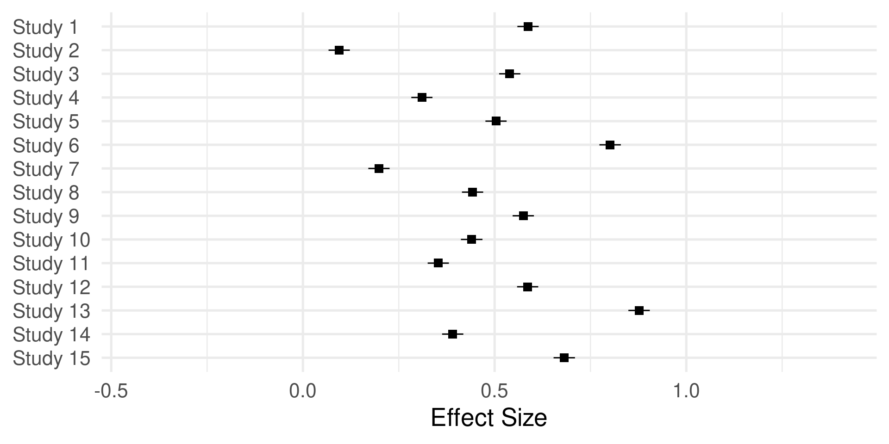
RE model estimation
Given that we extended the EE model equation. Also the estimation of the average effect need to be extended. Basically the RE is still a weighted average but weights need to include also \(\tau^2\).
The Restricted Maximum Likelihood (REML) estimator is considered one of the best. We can compare the results using the all_rma() custom function that tests all the estimators1.
Looking at Equation 4, \(\tau^2\) is essentially the variance of the random-effect. This means that we can intepret it as the variability (or the standard deviation) of the true effect size distribution.
Code
tau2s <-c(0.01, 0.05, 0.1, 0.2)tau2s_t <- latex2exp::TeX(sprintf("$\\tau^2 = %.2f$", tau2s))par(mfrow =c(1, 3))hist(rnorm(1e4, 0, sqrt(tau2s[1])), xlim =c(-2, 2), xlab = latex2exp::TeX("$y_i$"), main = tau2s_t[1], probability =TRUE, ylim =c(0, 4.5), col ="dodgerblue")hist(rnorm(1e4, 0, sqrt(tau2s[2])), xlim =c(-2, 2), xlab = latex2exp::TeX("$y_i$"), main = tau2s_t[2], probability =TRUE, ylim =c(0, 4.5), col ="dodgerblue")#hist(rnorm(1e4, 0, sqrt(tau2s[3])), xlim = c(-2, 2), xlab = latex2exp::TeX("$y_i$"), main = tau2s_t[3], probability = TRUE, ylim = c(0, 5))hist(rnorm(1e4, 0, sqrt(tau2s[4])), xlim =c(-2, 2), xlab = latex2exp::TeX("$y_i$"), main = tau2s_t[4], probability =TRUE, ylim =c(0, 4.5), col ="dodgerblue")
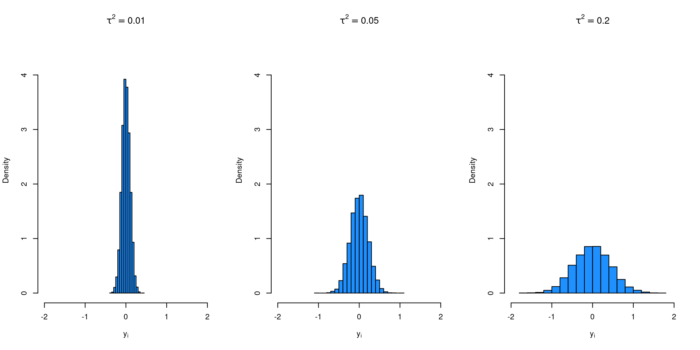
Intepreting \(\tau^2\)
As in the previus plot we can assume \(n = \infty\) and generate true effects from Equation 4. In this way we understand the impact of assuming (or estimating) a certain \(\tau^2\).
For example, a \(\tau = 0.2\) and a \(\mu_{\theta} = 0.5\), 50% of the true effects ranged between:
D <-0.5yis <- D +rnorm(1e5, 0, 0.2)quantile(yis, c(0.75, 0.25))#> 75% 25% #> 0.6337458 0.3656373
The \(Q\) Statistics1
The Q statistics is used to make inference on the heterogeneity. Can be considered as a weighted sum of squares:
\[
Q = \sum^k_{i = 1}w_i(y_i - \hat \mu)^2
\]
Where \(\hat \mu\) is EE estimation (regardless if \(\tau^2 \neq 0\)) and \(w_i\) are the inverse-variance weights. Note that in the case of \(w_1 = w_2 ... = w_i\), Q is just a standard sum of squares (or deviance).
The \(Q\) Statistics
Given that we are summing up squared distances, they should be approximately \(\chi^2\) with \(df = k - 1\). In case of no heterogeneity (\(\tau^2 = 0\)) the observed variability is only caused by sampling error and the expectd value of the \(\chi^2\) is just the degrees of freedom (\(df = k - 1\)).
In case of \(\tau^2 \neq 0\), the expected value is \(k - 1 + \lambda\) where \(\lambda\) is a non-centrality parameter.
In other terms, if the expected value of \(Q\) exceed the expected value assuming no heterogeneity, we have evidence that \(\tau^2 \neq 0\).
The \(Q\) Statistics
Let’s try a more practical approach. We simulate a lot of meta-analysis with and without heterogeneity and we check the Q statistics.
Let’s try a more practical approach. We simulate a lot of meta-analysis with and without heterogeneity and we check the Q statistics.
clearly, in the presence of heterogeneity, the expected value of the Q statistics is higher (due to \(\lambda \neq 0\)) and also residuals are larger (the \(\chi^2\) is just a sum of squared weighted residuals)
we can calculate a p-value for deviation from the \(\tau^2 = 0\) case as evidence agaist the absence of heterogeneity
We have two sources of variability in a random-effects meta-analysis, the sampling variability \(\sigma_i^2\) and true heterogeneity \(\tau^2\). We can use the \(I^2\) to express the interplay between the two. \[
I^2 = 100\% \times \frac{\hat{\tau}^2}{\hat{\tau}^2 + \tilde{v}}
\qquad(9)\]
Where \(\tilde{v}\) is the typical sampling variability. \(I^2\) is intepreted as the proportion of total variability due to real heterogeneity (i.e., \(\tau^2\))
Note that we can have the same \(I^2\) in two completely different meta-analysis. An high \(I^2\) does not represent high heterogeneity. Let’s assume to have two meta-analysis with \(k\) studies and small (\(n = 30\)) vs large (\(n = 500\)) sample sizes.
Let’s solve Equation 9 for \(\tau^2\) (using filor::tau2_from_I2()) and we found that the same \(I^2\) can be obtained with two completely different \(\tau^2\) values:
In the hypothetical case where \(\sigma^2_1 = \dots = \sigma^2_k\), \(\tilde{v}\) is just \(\sigma^2\). This fact is commonly used to calculate the statistical power analytically (Borenstein et al. 2009, chap. 29).
Using simulations we can see that \(\tilde{v}\) with heterogenenous variances (i.e., sample sizes in this case) can be approximated by the central tendency of the sample size distribution. Note that we are fixing \(\sigma^2 = 1\) thus we are not including uncertainty.
Code
k <-100# number of studiesn <-30# sample sizevti <-rep(NA, 1e5)for(i in1:1e5){ ni <-rpois(k, n) vi <-1/ni +1/ni vti[i] <-vtilde(1/vi)}# vtilde calculated from lambdavt <-1/n +1/n
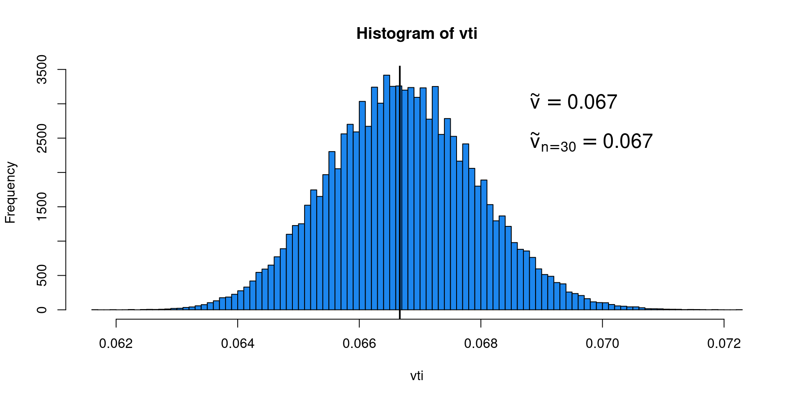
\(H^2\)
The \(H^2\) is an alternative index of heterogeneity. Is calculated as:
\[
H^2 = \frac{Q}{k - 1}
\]
We defined \(Q\) as the weighted sum of squares representing the total variability. \(k - 1\) is the expected value of the \(\chi^2\) statistics (i.e., sum of squares) when \(\tau^2 = 0\) (or \(\lambda = 0\)).
Thus \(H^2\) is the ratio between total heterogeneity and sampling variability. Higher \(H^2\) is associated with higher heterogeneity relative to the sampling variability. \(H^2\) is not a measure of absolute heterogeneity.
\(H^2\)
When we are fitting a RE model, the \(I^2\) and \(H^2\) equations are slightly different (Higgins and Thompson 2002). See also the metaforsource code.
What is reported in the model summary as ci.lb and ci.ub refers to the 95% confidence interval representing the uncertainty in estimating the effect (or a meta-regression parameter).
Without looking at the equations, let’s try to implement this idea using simulations.
choose \(k\), \(\tau^2\) and \(n\)
simulate data (several times) accordingly and fit the RE model
extract the estimated effect size
compare the simulated sampling distribution with the analytical result
Confidence Intervals
k <-30n <-30tau2 <-0.05mu <-0.5nsim <-5e3# true parameters (see Borenstein, 2009; Chapter 29)vt <-1/n +1/nvs <- (vt + tau2)/ kse <-sqrt(vs)mui <-rep(NA, nsim)for(i in1:nsim){ dat <-sim_studies(k = k, es = mu, tau2 = tau2, n1 = n) fit <-rma(yi, vi, data = dat) mui[i] <-coef(fit)[1]}# standard errorc(simulated =sd(mui), analytical = fit$se)#> simulated analytical #> 0.06284351 0.06136665# confidence intervalrbind("simulated"=quantile(mui, c(0.05, 0.975)),"analytical"=c("2.5%"= fit$ci.lb, "97.5%"= fit$ci.ub))#> 5% 97.5%#> simulated 0.3949926 0.6219499#> analytical 0.3073924 0.5479453
Confidence Intervals
hist(mui, breaks =50, freq =FALSE, main ="Sampling Distribution", xlab = latex2exp::TeX("$\\mu_{\\theta}$"))curve(dnorm(x, mu, se), add =TRUE, col ="firebrick", lwd =1.5)
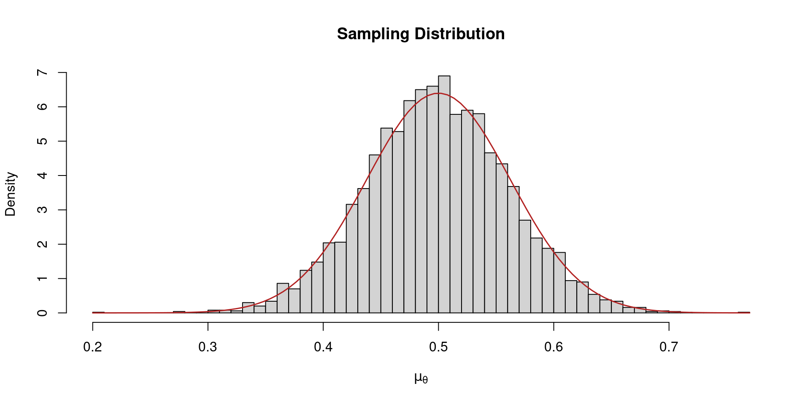
Confidence Intervals
Now the equation for the 95% confidence interval should be more clear. The standard error is a function of the within study sampling variances (depending mainly on \(n\)), \(\tau^2\) and \(k\). As we increase \(k\) the standard error tends towards zero.
\[
CI = \hat \mu_{\theta} \pm z SE_{\mu_{\theta}}
\]
We can also see it analytically, there is a huge impact of \(k\).
Code
# true parameters (see Borenstein, 2009; Chapter 29)vt <-1/n +1/nvs <- (vt + tau2)/ kse <-sqrt(vs)k <-c(10, 50, 100, 500, 1000, 5000)n <-c(10, 50, 100, 500, 1000, 5000)tau2 <-c(0, 0.05, 0.1, 0.2)dd <-expand.grid(k = k, n = n, tau2 = tau2)dd$vt <-with(dd, 1/n +1/n)dd$vs <-with(dd, (vt + tau2)/ k)dd$se <-sqrt(dd$vs)dd$k <-as_tex_label(dd$k, "$k = %s$")ggplot(dd, aes(x = n, y = se, color =factor(tau2))) +geom_line() +facet_wrap(~k, labeller = label_parsed) +labs(color = latex2exp::TeX("\\tau^2")) +xlab("Sample Size (n)") +ylab(latex2exp::TeX("$SE_{\\mu_{\\theta}}$"))
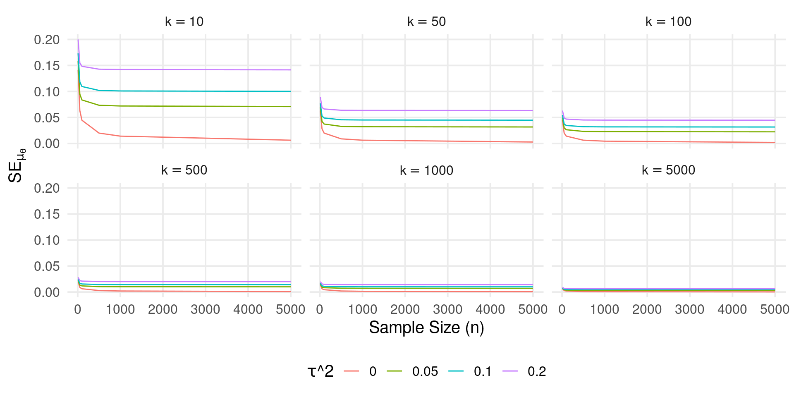
Prediction intervals (PI)
We could say that the CI is not completely taking into account the between-study heterogeneity (\(\tau^2\)). After a meta-analysis we would like to know how confident we are in the parameters estimation BUT also what would be the expected effect running a new experiment tomorrow?.
To understand the concept, let’s assume to have a sample \(X\) of size \(n\) and we estimate the mean \(\overline X\). The PI is calculated as1:
\[
PI = \overline X \pm t_{\alpha/2} s_x \sqrt{1 + \frac{1}{n}}
\]
Where \(s\) is the sample standard deviation. Basically we are combining the uncertainty in estimating \(\overline X\) (i.e, \(\frac{s_x}{n}\)) with the standard deviation of the data \(s_x\). Compare it with the confidence interval containing only \(\frac{s_x}{n}\).
PI in meta-analysis
For meta-analysis the equation1 is conceptually similar but with different quantities.
\[
PI = \hat \mu_{\theta} \pm z \sqrt{\tau^2 + SE_{\mu_{\theta}}}
\]
Basically we are combining all the sources of uncertainty. As long as \(\tau^2 \neq 0\) the PI is greater than the CI (in the EE model they are the same). Thus even with very precise \(\mu_{\theta}\) estimation, large \(\tau^2\) leads to uncertain predictions.
PI in meta-analysis
In R the PI can be calculated using predict(). By default the model assume a standard normal distribution thus using \(z\) scores. To use the Riley, Higgins, and Deeks (2011) approach (\(t\) distribution) the model need to be fitted using test = "t".
k <-100dat <-sim_studies(k = k, es =0.5, tau2 =0.1, n1 =30)fit_z <-rma(yi, vi, data = dat, test ="z") # test = "z" is the defaultpredict(fit_z) # notice pi.ub/pi.lb vs ci.ub/ci.lb#> #> pred se ci.lb ci.ub pi.lb pi.ub #> 0.4923 0.0397 0.4145 0.5702 -0.1090 1.0937# manuallyfit_z$b[[1]] +qnorm(c(0.025, 0.975)) *sqrt(fit_z$se^2+ fit_z$tau2)#> [1] -0.1090419 1.0936602fit_t <-rma(yi, vi, data = dat, test ="t")predict(fit_t) # notice pi.ub/pi.lb vs ci.ub/ci.lb#> #> pred se ci.lb ci.ub pi.lb pi.ub #> 0.4923 0.0397 0.4135 0.5711 -0.1165 1.1011# manuallyfit_z$b[[1]] +qt(c(0.025, 0.975), k -2) *sqrt(fit_t$se^2+ fit_t$tau2)#> [1] -0.116560 1.101178
References
Borenstein, Michael, Larry V Hedges, Julian P T Higgins, and Hannah R Rothstein. 2009. “Introduction to Meta-Analysis.”https://doi.org/10.1002/9780470743386.
Harrer, Mathias, Pim Cuijpers, Toshi Furukawa, and David Ebert. 2021. Doing Meta-Analysis with r: A Hands-on Guide. 1st ed. London, England: CRC Press.
Hedges, Larry V, and Jacob M Schauer. 2019. “Statistical Analyses for Studying Replication: Meta-Analytic Perspectives.”Psychological Methods 24 (October): 557–70. https://doi.org/10.1037/met0000189.
Higgins, Julian P T, and Simon G Thompson. 2002. “Quantifying Heterogeneity in a Meta-Analysis.”Statistics in Medicine 21 (June): 1539–58. https://doi.org/10.1002/sim.1186.
IntHout, Joanna, John P A Ioannidis, Maroeska M Rovers, and Jelle J Goeman. 2016. “Plea for Routinely Presenting Prediction Intervals in Meta-Analysis.”BMJ Open 6 (July): e010247. https://doi.org/10.1136/bmjopen-2015-010247.
Riley, Richard D, Julian P T Higgins, and Jonathan J Deeks. 2011. “Interpretation of Random Effects Meta-Analyses.”BMJ 342 (February): d549. https://doi.org/10.1136/bmj.d549.